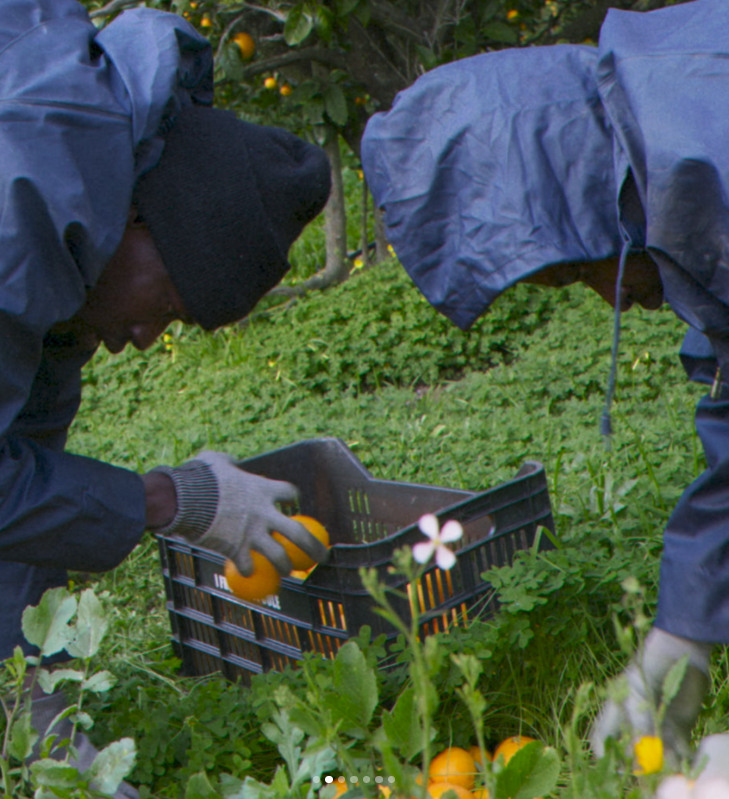
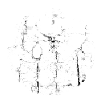

when I pray

ⵔⵔᄋо°°
polyester clothes and mesh, sometimes it's just seeing the silent women and men and knowing their story of passing through the deserts, passing, and then, similar, and aside especially at the end, in the desert, they go away in sentences that barely concern you, this pain of walking in the poignancy of feelings without strength. we should hallelujah! Live as before while we would live as after, it's the vegetal and muddy techno-archaism that we feel when we look at the ground while praying, the face reddened by the presence of the third of the lost. to pray is to sit on wicker and let silence stay, earthly, taire reste, terrestre. ~~~~ if coding is an operational gesture in silence, do you bow down, retreat, conceive the fullness of extent, able to be interested in unreal materials, would the sky be too charged here, the air too heavy and electric orange to pray, or would it favor the passage ? ~~~~
praying is also like watching videos of pakistani dude doing ASMR at home with their children, or google maps users commenting under some of Syria's and Lebanon's border,it's how you would like to be the opening and the constraint, the reverse step and the random traits of difference, perhaps it's also sitting or kneeling and admitting that we have a premonition of what is happening despite us, the rumors and loudspeakers,
